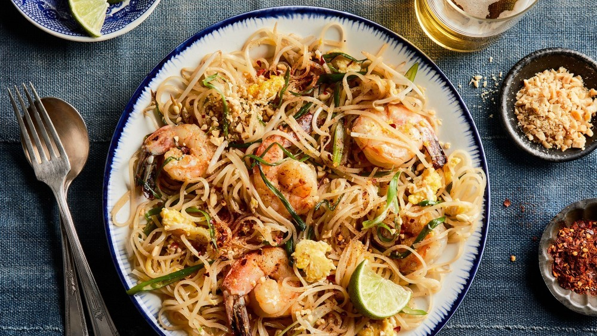

Padthai
Történet
A pad thai egy híres thai étel, amely a thai konyha egyik legismertebb és legnépszerűbb étele. A története érdekesen fonódik a thai kultúrához és történelemhez.
A pad thai eredetével kapcsolatban többféle verzió létezik, de általánosságban elmondható, hogy az étel Thaiföldhöz kötődik. A pad thai története a második világháború utáni időszakig nyúlik vissza. Ebben az időszakban Thaiföld miniszterelnöke, Plaek Phibunsongkhram, egy nemzeti ételeket népszerűsítő kampány keretében a pad thai népszerűsítését tűzte ki célul. Az ő irányítása alatt az országban egyre nagyobb hangsúlyt kapott a thai kultúra és a hagyományos ételek előtérbe helyezése.

Hozzávalók
- olaj
- 2 gerezd fokhagyma
- 35 dkg csirkemell
- 7.5 dkg mungóbabcsíra
- 3 szál újhagyma
- 2 db tojás
- 30 dkg rizs tészta
- 3 ek halszósz
- 1.5 ek barna cukor
- sótlan pörkölt földimogyoró
- őrölt csilipaprika
- 1 db lime
- friss koriander